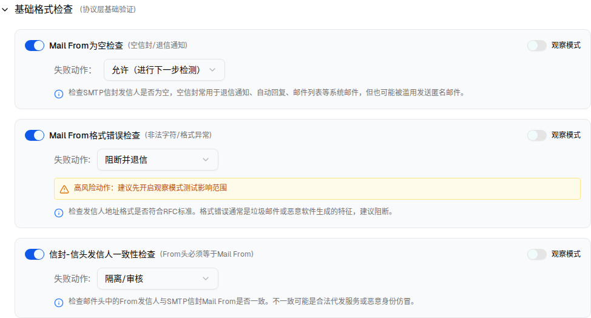

2.1 基础格式检查 BasicFormatCheck
| 元信息 | 值 |
|---|---|
| 组件类型 | Collapsible + 3 × (Switch 启用 + Switch 观察模式 + Select 失败动作) |
| 交互层级数 | 3 层（层级 0 内嵌；层级 1「观察模式」、层级 2「检查项禁用」拆分为子文件） |
| demo 源码 | identity-strategy-page.tsx L448-L736 |
| 状态字段 | basicFormatOpen；每项 3 个：xxxCheck / xxxAction / xxxObserve，另有 xxxPrevAction 缓存 |
| i18n key | identity.basicFormatCheck / identity.protocolBasicValidation / identity.failureAction / identity.mailFromEmptyCheck 等 |
交互层级关系图
flowchart LR L0["层级 0
基础格式检查（默认展开）"] L1["层级 1
观察模式开启"] L2["层级 2
检查项禁用"] L0 -- "观察模式 Switch → on" --> L1 L1 -- "观察模式 Switch → off（恢复缓存动作）" --> L0 L0 -- "启用 Switch → off" --> L2 L1 -- "启用 Switch → off（同步关闭观察模式）" --> L2 L2 -- "启用 Switch → on" --> L0
0 交互层级 0：默认渲染
触发路径：页面加载 → 点击左侧导航「身份认证与仿冒检测」→ 默认展开
折叠标题可收起；三个检查项的启用/观察开关、失败动作下拉均可操作，联动与 demo 一致
Mail From为空检查(空信封/退信通知)
观察模式
失败动作：
检查SMTP信封发信人是否为空，空信封常用于退信通知、自动回复、邮件列表等系统邮件，但也可能被滥用发送匿名邮件。
Mail From格式错误检查(非法字符/格式异常)
观察模式
失败动作:
高风险动作：建议先开启观察模式测试影响范围
检查发信人地址格式是否符合RFC标准。格式错误通常是垃圾邮件或恶意软件生成的特征，建议阻断。
信封-信头发信人一致性检查(From头必须等于Mail From)
观察模式
失败动作:
检查邮件头中的From发信人与SMTP信封Mail From是否一致。不一致可能是合法代发服务或恶意身份仿冒。

UI 元素清单
| 检查项 | 启用 | 失败动作（默认） | 默认告警 | 说明文案 |
|---|---|---|---|---|
| Mail From 为空检查 (空信封/退信通知) | 开 | pass 允许（进行下一步检测） | 无 | 检查SMTP信封发信人是否为空…空信封常用于退信通知、自动回复、邮件列表等系统邮件 |
| Mail From 格式错误检查 (非法字符/格式异常) | 开 | reject 阻断并退信 | amber 高风险「高风险动作：建议先开启观察模式测试影响范围」 | 检查发信人地址格式是否符合RFC标准 |
| 信封-信头发信人一致性检查 (From头必须等于Mail From) | 开 | quarantine 隔离/审核 | 无 | 检查邮件头中的From发信人与SMTP信封Mail From是否一致 |
失败动作下拉选项（4 项，全部检查项共用）
| value | 中文文案 | 统一规则系统 action 映射建议 |
|---|---|---|
| pass | 允许（进行下一步检测） | accept |
| quarantine | 隔离/审核 | quarantine |
| reject | 阻断并退信 | reject（5xx） |
| drop | 静默丢弃 | discard |
DOM 树比对结果
| 比对项 | demo 实际 DOM | 嵌入 spec 的 HTML | 是否一致 |
|---|---|---|---|
| 根节点 | div[data-slot=collapsible][data-state=open] | 同 | ✅ |
| 节点总数 | 82 | 82 | ✅ |
| 直接子节点数 | 2（trigger button + content div） | 2 | ✅ |
| 检查项卡片数 | 3 | 3 | ✅ |
| 高风险告警块 | 仅「Mail From 格式错误」渲染 1 个（action=reject） | 1 个（复用 demo 节点）+ 另 2 张卡片预置 hidden 告警节点供交互 | ⚠ 有意差异 |
| 「观察中」标签 | 未渲染（3 项观察模式均关闭） | 预置 hidden，开启观察模式时显示 | ⚠ 有意差异 |
| 观察模式 Switch | data-state=unchecked，未 disabled | 同 | ✅ |
差异说明：demo 用条件渲染卸载「观察中」标签与另两张卡片的告警块。为让预览可反复开关，spec 预置这些节点并置 hidden（不参与布局，视觉等效）。其余节点逐一对应。
交互层级详情（拆分为独立文件）
| 层级 | 名称 | 触发路径 | 详情链接 |
|---|---|---|---|
| 0 | 默认渲染 | 页面加载 | 上方内嵌 |
| 1 | 观察模式开启 | 检查项右上「观察模式」Switch → on | 查看详情 → |
| 2 | 检查项禁用 | 检查项左侧「启用」Switch → off | 查看详情 → |